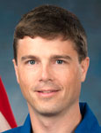

Lyndon B. Johnson Space Center
Houston, Texas 77058
|
National Aeronautics and Space Administration Lyndon B. Johnson Space Center Houston, Texas 77058 |
 |
Biographical Data |
||
G. REID WISEMAN (COMMANDER, U.S. NAVY)
NASA Astronaut
Pronunciation: REED WISE-man
PERSONAL DATA: Born in 1975, Wiseman’s hometown is Baltimore, Maryland. Married to the former Carroll Taylor of Virginia Beach, Virginia. They have two daughters. Wiseman’s parents, Bill and Judy Wiseman, reside in Hunt Valley, Maryland.
EDUCATION: Graduated from Dulaney High School, Timonium, Maryland, 1993; Bachelor of Science degree in Computer and Systems Engineering, Rensselaer Polytechnic Institute, Troy, New York, 1997; Master of Science degree in Systems Engineering, Johns Hopkins University, Baltimore, Maryland, 2006.
ORGANIZATIONS: Tailhook Association, Rensselaer Polytechnic Institute Alumni Association, Tau Beta Pi Engineering Honor Society, Society of Experimental Test Pilots.
SPECIAL HONORS: Air Medal with Combat V (five awards), Navy and Marine Corps Commendation Medal with Combat V (four awards), Navy and Marine Corps Achievement Medal, various other campaign and service awards.
EXPERIENCE: Wiseman was commissioned through the Reserve Officers’ Training Corps (ROTC) following graduation from Rensselaer Polytechnic Institute in 1997 and reported to Pensacola, Florida, for flight training. He was designated as a Naval Aviator in 1999 and reported to Fighter Squadron 101, Naval Air Station Oceana, Virginia, for transition to the F-14 Tomcat. Following his initial training, Wiseman was assigned to Fighter Squadron 31, also at Oceana, and made two deployments to the Middle East, supporting Operations Southern Watch, Enduring Freedom and Iraqi Freedom. During his second deployment in 2003, he was selected to attend the U.S. Naval Test Pilot School, Class 125. Following graduation in June 2004, Wiseman was assigned as a Test Pilot and Project Officer at Air Test and Evaluation Squadron Two Three (VX-23) at Naval Air Station Patuxent River, Maryland. At VX-23, Wiseman earned his master’s degree and worked various flight test programs involving the F-35 Lightning II, F-18 weapons separation, Ship Suitability and the T-45 Goshawk. Following his tour at Patuxent River, Wiseman reported to Carrier Air Wing Seventeen as the Strike Operations Officer, where he completed a deployment around South America. From there, he was assigned to Strike Fighter Squadron 103, Naval Air Station Oceana, Virginia, flying the FA-18F Super Hornet. He was deployed to the Middle East when he was selected for astronaut training.
NASA EXPERIENCE: Wiseman reported to the Johnson Space Center in August 2009 and completed astronaut candidate training in May 2011. He served as flight engineer aboard the International Space Station for Expedition 41.
SPACE FLIGHT EXPERIENCE: Expedition 40/41 - On May 29, 2014, Wiseman launched from the Baikonur Cosmodrome in Kazakhstan to the International Space Station along with Soyuz Commander Maxim Suraev of the Russian Federal Space Agency (Roscosmos) and Flight Engineer Alexander Gerst of the European Space Agency. Upon reaching the station, they joined NASA astronaut and Commander Steven Swanson, cosmonauts Alexander Skvortsov, and Oleg Artemyev of Roscosmos. The three crew members of Expedition 41 returned to earth on Sunday, November 9, 2014, in Arkalyk, Kazakhstan after a 165 day mission that included hundred of scientific experiemnts and several spacewalks. They set a milestone for station science by completing a record 82 hours of research in a single week in July.
SOCIAL MEDIA: Twitter: https://twitter.com/astro_reid
JANUARY 2015